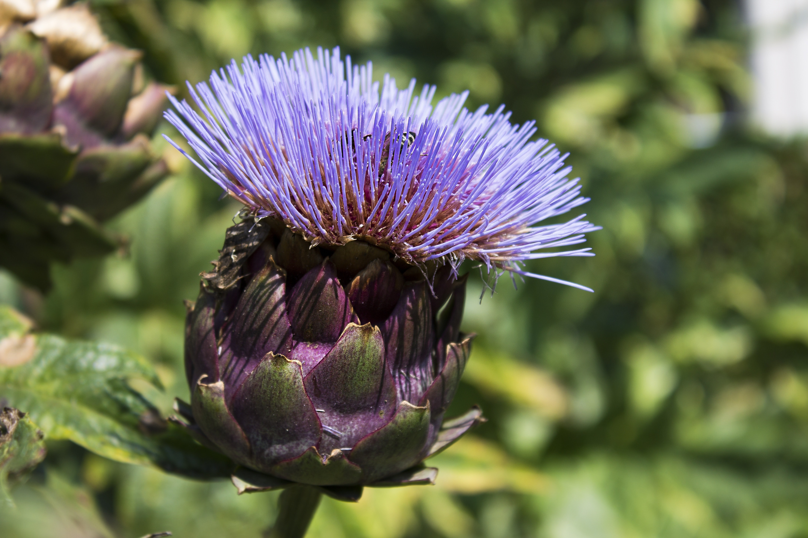

{kind=link}
{kind=link}
{kind=link}
{kind=link}
' Astuces '
MODE D'EMPLOI
- Infusion :: Mettre ¼ de litre d'eau à bouillir, verser la sur les plantes ( 1 pincée ou une cuillèreà café ), laisser infuser dix minutes, après avoir laisser légèrement refroidir, filtrer soigneusement, vous pouvez consommez.
- Macération : dans l’eau : Laissez macérer une pincée de plante pour un quart de litre d'eau pendant au moins deux heures ( attention à la pureté de l'eau que vous utilisez ). On préfère la macération pour les plantes fragiles ( mauve, guimauve, reine des prés, ... ).
- Mans l’huile: : Laissez macérer deux poignées de plantes sèches dans un litre d'huile ( ex.: Olive, Tournesol, Sésame, ... )pendant 15 jours minimum, filtrez puis fermez soigneusement . Ces huiles s'utilisent pour la table ( ex.: sureau violette,estragon,…) ou bien pour les soins du corps ( ex.: millepertuis, calendula, arnica ). dans le vin, le vinaigre ou l'alcool (sureau, gentiane). Laissez macérer une à deux poignées de plante(s) dans un bocal fermé pendant 15 jours, filtrer et mettre en bouteille (sureau, basilic, sauge, ... ). Pour les liqueurs, on laisse macérer la plante dans de l’alcool ou de l’eau de vie pendant quelques jours (2 à 15 jours), on filtre et ton ajoute un sirop composé de 1,5 Kg de sucre pour un litre d’eau ( angélique, gentiane, chardon-bénit, ... ).
jan 5, 2021
Achill
Plante du sang, varices, hémorroïdes. Condimentaire : dans les soupes ou les purées,… Agricole : Infusion stimulante pour le compost au jardin
jan 5, 2021
Angélique
Plante tonique et digestive. Convient aux convalescents surmenés et états d'affaiblissements divers. Aromatique : parfume liqueurs, sirops ou confiseries
jan 5, 2021
Anis
Plante digestive, calmante des ballonnements et de la toux Aromatique : liqueurs, sirops, confiserie et pâtisserie (pain d’épice)

jan 5, 2021
Basilic
Plante digestive, calmante des ballonnements et de la toux Aromatique : liqueurs, sirops, confiserie et pâtisserie (pain d’épice)